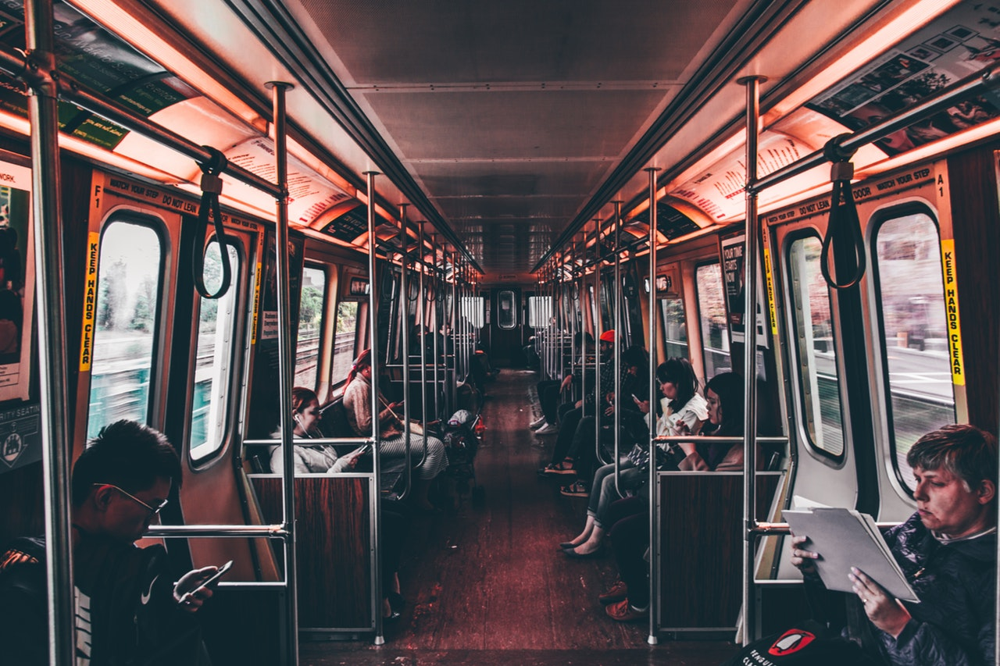
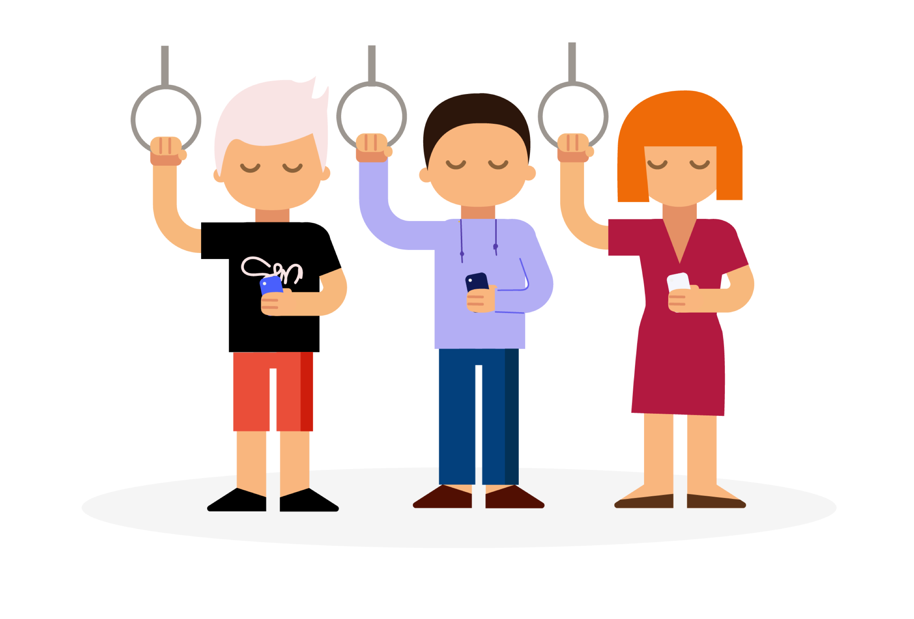
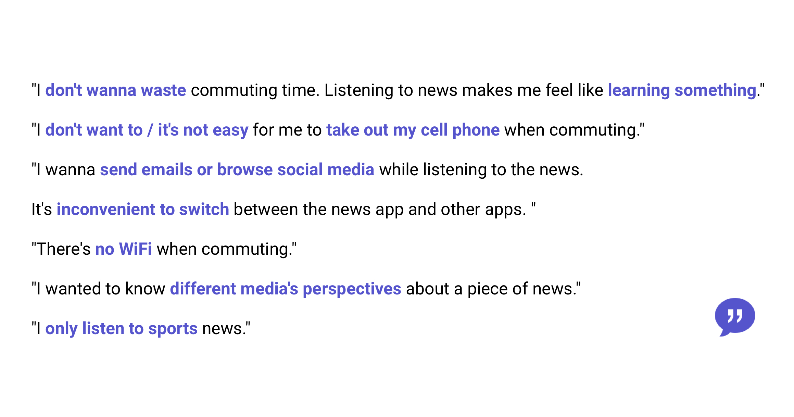
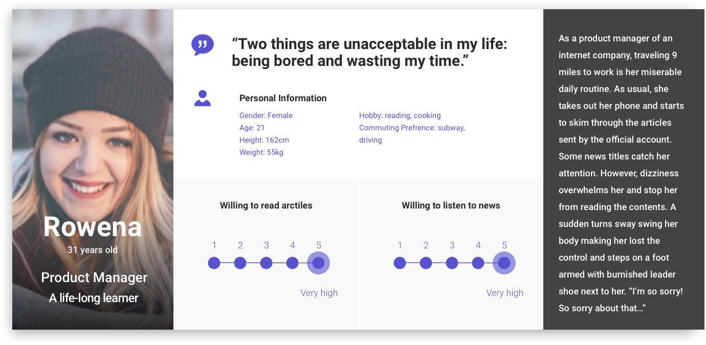
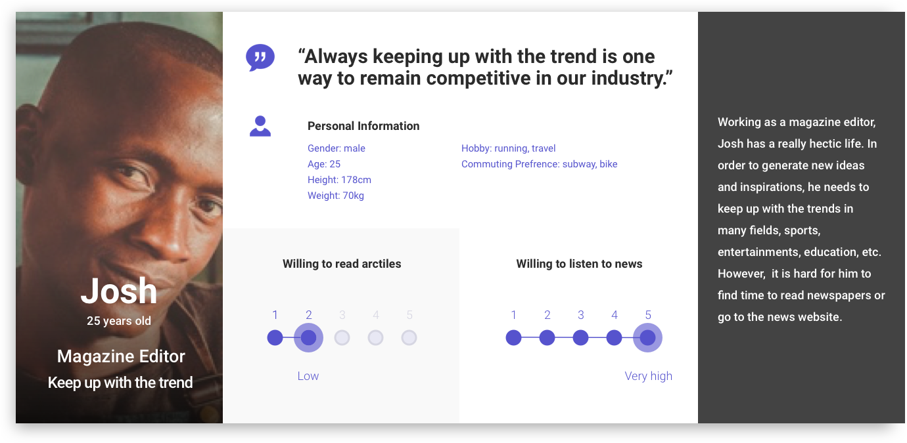
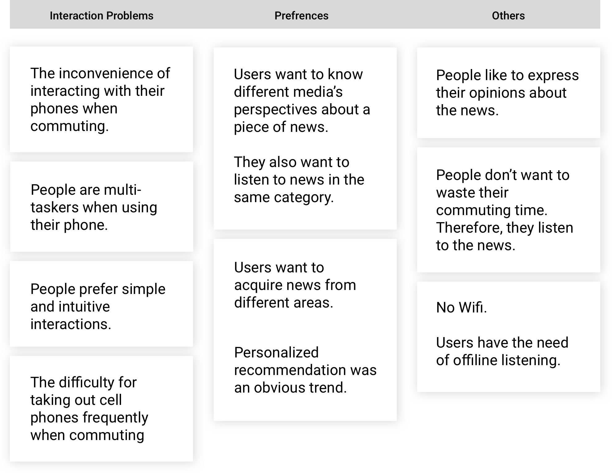
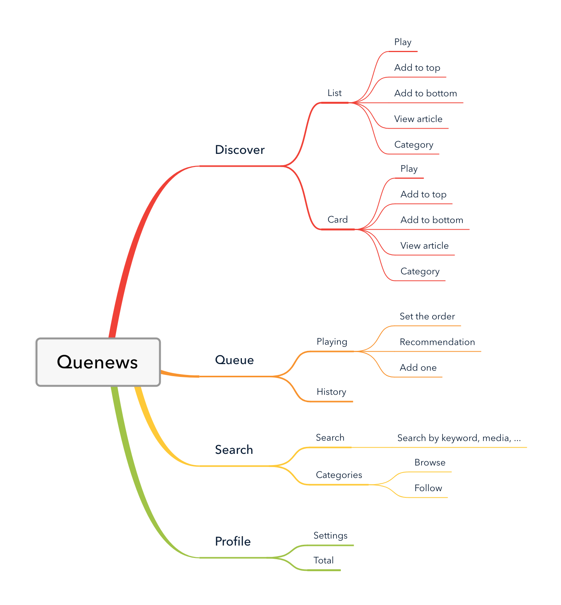
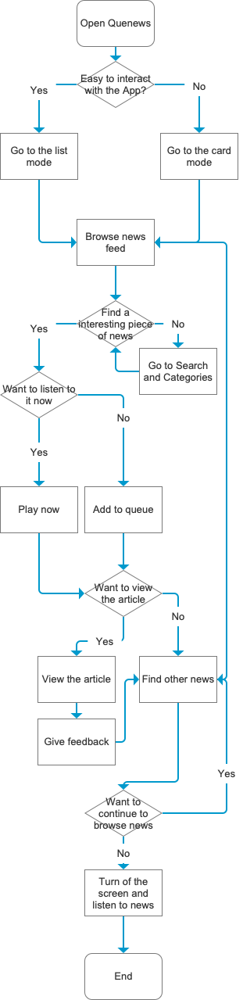
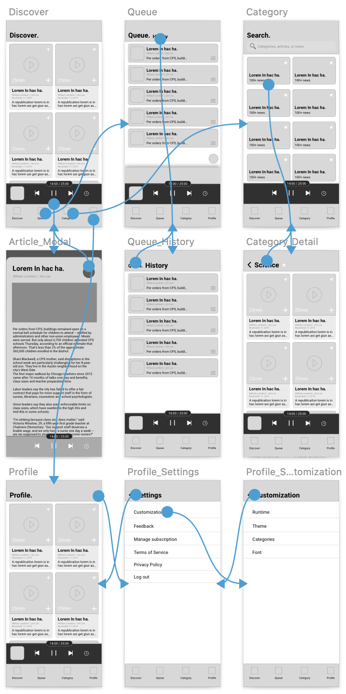
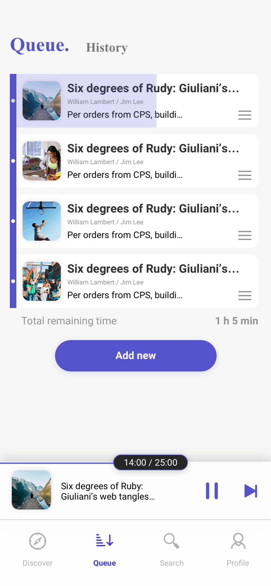

< Quenews
is a queue-based news app for commuters.Product Design / Group Project (group of 2)
My Role: Solution, Information Architecture, UI Design, Prototyping
Background
Commuters like browsing news. However, there are lots of pain points using existing news apps when commuting and there isn't a news app designed specially for commuters. Inspired by the pain points of commuters, my friend Erin and me designed Quenews together.
User Research
Interview
What do commuters want?
Persona
 Competitive Analysis
How do existing apps provide news to their users?

Insight
The existing problems.
App Design
Information Architecture
User Flow
Wireframe
UI Design
Queue
Commuters can easily add a piece of news to their queue. In doing so, they don't have to frequently take out their cell phones or switch between apps, or to worry about WiFi. The only thing is to add several pieces of news to the queue, and then enjoy the journey!
Recommendation
The recommendation algorithm is also based on the queue. Commuters can add a new piece of news to their queues according to their listening history. Also, if the current queue is finished, the system will automatically choose a piece of news to play.
A never-ending listening experience
Quenews can provide a never-ending listening experience to its users - they can enjoy the news the like whenever they open the app.
Discover Page: Play now/Add to Top/Add to Bottom
Users can browse news at Discover Page and add them to the queue. They have three choices - play it now, and add it to the top/bottom of the queue. The three major actions are represented by a play button and two arrow buttons respectively.
Play progress
The current time/total time of a piece of news are represented on the slider.

Card View: Better for commuters
Sometimes it's difficult for commuters to interact precisely with the app (e.g. when they are walking or on a bus). Thus, we added a card view as well as some gestures to better illustrate the information and refine the interaction. They can tap the play button to play it now, swipe up/down to add it to the top/bottom of the queue, and swipe left/right to switch between different news.

Article & Feedback
Users can view the article of a piece of news. For commuters, viewing articles is a less-used function, which is why we used a modal window to show the articles as a temporary status.
We also made a balance between the forms of feedback. For one thing, user's feedback about an article could be useful for data analysis and recommendation. On the other hand, however, more and more news app tend to close their comment function to avoid extreme opinions. Therefore, we let the users choose one of the Emojis after they read an article.


Search
We noticed that many users tend to listen to the news from same category. Some of them are sports fans, while others want to know about different media's perspective about a politic issue. As a result, we designed a search bar and several categories for them to choose.

Profile
In order to encourage commuters to get knowledge from the news, we designed a reward system. They can unlock different functions (e.g. customize the font and recommendation prefrences) with the more news they listen to.